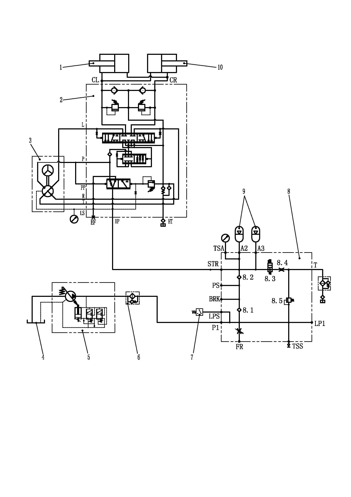

转向管路安装 · STEERING LINES MOUNTING
Спецификация
1
Левый гидроцилиндр поворота
5
Насос рулевого управления
9
Энергоаккумулятор рулевого управления
2
Усилитель потока
6
Фильтр высокого давления
10
Правый гидроцилиндр поворота
3
Клапан изменения направления движения
7
Датчик аварийного давления в системе рулевого управления
4
Гидравлический бак
8
Блок клапанов управления поворотом
Рис. 1. Принципиальная схема системы рулевого управления
Описание системы рулевого управления
Общие сведения
Если не указано иное, номера позиций в скобках совпадают с номерами позиций на рис. 1.
В состав системы рулевого управления входят следующие компоненты:
1. Левый гидроцилиндр поворота (1) - он устанавливается впереди переднего моста с левой стороны, соединяется с передним мостом и левым передним колесом, является исполнительным элементом рулевого управления.
2. Усилитель потока (2) - он устанавливается с внутренней стороны левого лонжерона рамы, возле правого гидроцилиндра поворота (10). Усилитель потока (2) служит для пропорциональной подачи большого потока гидравлического масла под высоким давлением в гидроцилиндр поворота по сигналам управления от клапана изменения направления движения.
3. Клапан изменения направления движения (3) - он устанавливается в передней части кабины, соединяется с рулевым колесом через крестовину, при вращении рулевого колеса выдается сигнал давления от клапана изменения направления движения (3) к усилителю потока (2), чтобы достичь цели управления направлением движения.
4. Гидробак (4) - он устанавливается на кронштейне гидробака между передними и задними колесами с внешней стороны левого лонжерона рамы, служит для питания гидравлической системы гидравлическим маслом.
5. Насос рулевого управления (5) - он интегрирован в заднюю часть насоса подъема, мощность на насос передается от приводного вала, соединяющего вывод генератора, он соединяется с рамой через кронштейн крепления насоса. Насос рулевого управления представляет собой регулируемый поршневой насос с наклонной шайбой и компенсатором давления, предназначенный для обеспечения системы рулевого управления, системы подъема и тормозной системы кинетической энергией.
6. фильтр высокого давления (6) - он устанавливается на кронштейне фильтра перед гидробаком с внутренней стороны левого лонжерона рамы; система рулевого управления оснащена фильтром высокого давления, отфильтрованное масло под высоким давлением через трубопровод поступает в систему рулевого управления.
7. Датчик аварийного давления в системе рулевого управления (7) - он устанавливается на блоке клапанов управления поворотом, если давление в энергоаккумуляторе рулевого управления (9) меньше установочного значения, то выдается предупреждающее сообщение для информирования водителя об этом.
8. Блок клапанов управления поворотом (8) - он устанавливается между масляным фильтром высокого давления и усилителем потока с внутренней стороны левого лонжерона рамы, что позволяет осуществлять функции наполнения энергоаккумулятора рулевого управления, обеспечения системы рулевого управления энергией давления, обеспечения тормозной системы кинетической энергией, защиты системы от превышения давления и т.д.
9. Энергоаккумулятор рулевого управления (9) - он устанавливается перед гидробаком с внешней стороны левого лонжерона рамы, , когда насос рулевого управления не может обеспечить достаточным количеством энергии, необходимой для работы системы рулевого управления, он используется в качестве аварийного источника энергии для системы рулевого управления.
10. Правый гидроцилиндр поворота (10) - он устанавливается впереди переднего моста с правой стороны, соединяется с передним мостом и правым передним колесом, является исполнительным элементом рулевого управления.
Управление
Система рулевого управления предназначена для изменения направления движения автомобиля, процесс управления заключается в следующем.
Гидравлическое масло от насоса рулевого управления (5) проходит через фильтр высокого давления (6) и поступает на вход (P1) блока клапанов управления поворотом (8), давление отсечки насоса рулевого управления (5) составляет 3450 фунтов/кв. дюйм (24,000 кПа).
Масло под давлением после поступления в блок клапанов управления поворотом (8) проходит через обратный клапан (8.1), обратный клапан (8.2) и поступает в энергоаккумулятор рулевого управления (9), чтобы наполнить энергоаккумулятор.
После остановки автомобиля подключается электромагнитный перепускной клапан (8.3) под действием реле выдержки времени, масло под давлением от энергоаккумулятора рулевого управления (9) проходит через электромагнитный перепускной клапан (8.3) и дроссельный клапан (8.4), это позволяет избежать длительного нахождения энергоаккумулятора рулевого управления (9) под давлением и уменьшить вероятность возникновения несчастных случаев. При ремонте системы рулевого управления следует нажать на кнопку электромагнитного перепускного клапана (8.3) вручную, еще раз сбросить давление в системе рулевого управления, убедиться в полном сбросе давления в системе рулевого управления во избежание телесных повреждений.
Кроме этого, предохранительный клапан (8.5) параллельно соединяется с входом блока клапанов управления поворотом (8), если давление на входе блока клапанов управления поворотом (8) превышает 4000 фунтов/кв. дюйм (28, 000 кПа), то масло под высоким давлением перепускает в гидробак (4) во избежание повреждений гидравлических элементов или гидравлических трубопроводов под слишком высоким давлением.
Масло под стабильно высоким давлением от энергоаккумулятора рулевого управления (9) проходит через отверстие (STR) блока клапанов управления поворотом (8) и поступает на входе усилителя потока (2). Масло под высоким давлением проходит через приоритетный клапан в усилителе потока (2) и поступает в основной золотник, основной золотник перемещается под действием управляющего давления от клапана изменения направления движения (3), масло под давлением поступает в левый и правый гидроцилиндры поворота (1 и 10) и заставляет рулевые тяги двигаться, чтобы совершить маневр поворота. Существует вероятность создания избыточного давления в системе рулевого управления из-за сопротивления, вызываемого неровностями дороги, масло через разгрузочный клапан двухстороннего действия со стороны выхода усилителя потока (2) возвращается в гидробак во избежание повреждений трубопроводов и элементов рулевого управления.
Техническое обслуживание и регулировка
Периодическое техническое обслуживание должно включать следующие виды работ:
1. Проверить все шланги и трубопроводы на наличие повреждений или утечек. Все шланги должны быть прочно зафиксированы и затянуты заданным моментом, указанным в части 200 - «Дополнения». Отремонтировать или заменить в соответствии с установленными требованиями.
2. Проверить компоненты сборочной единицы на наличие износа, повреждений или утечек.
3. Проводить испытания на работоспособность системы в соответствии с порядком проведения функциональных испытаний.
Функциональные испытания
Функциональные испытания производятся в следующем порядке:
1. Остановить автомобиль в безопасном месте. Кроме использования фрикционной системы торможения, еще нужно надежно удерживать его в неподвижном состоянии другим подходящим методом.
2. Выключить двигатель и полностью сбросить остаточное давление в системе, убедиться в нахождении рычага управления подъемом в плавающем режиме.
3. Убедиться в правильном прохождении испытаний и регулирования системы рулевого управления.
4. Убедиться в надежном затягивании всех трубопроводов и штуцеров в соответствии с порядком, указанным в части 200 - «Дополнения».
5. Убедиться в применении указанного гидравлического масла и правильном уровне масла в гидробаке карьерного самосвала.
6. Если карьерный самосвал долго стоит без движения с момента последнего запуска, вероятно, что было полностью слито гидравлическое масло из насоса рулевого управления или системы, следует заполнить насос рулевого управления указанным гидравлически маслом.
7. Проверить и определить давление предварительного наполнения энергоаккумулятора азотом в соответствии со следующими требованиями:
a. 1450-1550 фунтов/кв. дюйм (9995-10685 кПа) - для энергоаккумулятора рулевого управления (2 шт. большой размер)
b. 950-1050 фунтов/кв. дюйм (6555-7245 кПа) - для энергоаккумулятора тормозной системы (3 шт., малый размер)
Строго соблюдать требования к каждому энергоаккумулятору, указанные в части 050 - «Гидравлическая система».
ПРИМЕЧАНИЕ: Перед проверкой давления следует полностью сбросить гидравлическое давление в энергоаккумуляторе. Сброс давления в системах производится с помощью дренажных клапанов с ручным управлением в блоках клапанов управления поворотом и торможением.
Испытания и регулировка основной системы рулевого управления
Испытания системы рулевого управления производятся в следующем порядке:
1. Снова присоединить все ранее снятые шланги и затянуть их надлежащим образом.
2. Проверка давления в системе рулевого управления производится в следующем порядке:
a. Подключить главный выключатель.
b. Запустить двигатель и дать ему поработать на низких оборотах холостого хода.
c. Проверить давление, при постепенном повышении давления примерно до 2100 фунтов/кв. дюйм (14480 кПа) выключается индикатор низкого давления в системе рулевого управления.
ПРИМЕЧАНИЕ: Результатом испытаний является это приблизительное значение. Окончательное значение будет определено по результату последующих испытаний.
d. Наблюдать за показаниями манометра в гидравлическом блоке управления, давление стабилизуется после повышения давления до 3450-3550 фунтов/кв. дюйм (23790-24480 кПа).
ПРИМЕЧАНИЕ: Если давление не соответствует требуемой норме:
1. Проверить давление в других компонентах и выявить причины неправильного давления.
2. Если проблема возникает только по причине ненадлежащей регулировки компенсатора насоса рулевого управления, то следует проводить регулировку в соответствии с порядком, указанным в части - «Насос рулевого управления».
e. Дать двигателю продолжать работать на низких оборотах холостого хода, несколько раз поворачивать рулевое колесо вправо и влево, определить число оборотов рулевого колеса. Полный ход рулевого колеса от крайнего левого до крайнего правого положения составляет обычно 5-6 оборотов.
f. Убедиться в том, что давление в энергоаккумуляторе рулевого управления достигает 3450-3550 фунтов/кв. дюйм (23790-24480 кПа) при нахождении рулевого колеса в нейтральном положении.
g. Убедитесь в надлежащем уровне масла в гидробаке, необходимого для обеспечения нормальной работы. Выключить двигатель, если уровень масла не соответствует требованиям, снова заправлять гидробак.
h. Записывать значение давления.
3. Регулировка предохранительного клапана системы рулевого управления:
a. Увеличить частоту вращения двигателя до номинального значения и удерживать в этом состоянии.
b. Поворачивать рулевое колесо влево или вправо до упора.
c. Убедиться в том, что показание манометра с указанием «Клапан изменения направления движения» в гидравлическом блоке управления равно 2600-2700 фунтов/кв. дюйм (17930-18620 кПа).
d. Повернуть рулевое колесо в исходное состояние.
e. Убедиться, что давление примерно достигает 0 фунтов/кв. дюйм (0 кПа).
f. Постепенно уменьшить частоту вращения двигателя и дать ему поработать на низких оборотах холостого хода.
g. Если давление не находится в допустимом диапазоне, то отрегулировать усилитель потока в следующем порядке:
(1) снять крышку предохранительного клапана усилитель потока рулевого управления;
(2) повернуть регулировочный болт к внутренней стороне (для увеличения давления) или повернуть регулировочный болт к внешней стороне (для уменьшения давления) метрическим ключом для винтов с шестигранной головкой.
ПРИМЕЧАНИЕ: При каждом повороте винта на полный оборот изменяется значение давления примерно на 550 фунтов/кв. дюйм (3790 кПа).
(3) Увеличить частоту вращения двигателя до номинального значения и считывать значение давления. Убедиться в том, что давление достигает 2600-2700 фунтов/кв. дюйм (17930-18620 кПа)
(4) Повторять шаги от (1) до (3) до момента получения правильного значения давления.
(5) Плавно уменьшить частоту вращения двигателя и дать ему поработать на низких оборотах холостого хода.
(6) Зафиксировать регулировочный болт и закрутить крышку на посадочное место.
(7) Записать окончательное значение давления.
h. Увеличить частоту вращения двигателя до номинального значения, поворачивать рулевое колесо влево и вправо до упора 3 раза. Постепенно уменьшить частоту вращения двигателя и дать ему поработать на низких оборотах холостого хода.
ПРИМЕЧАНИЕ: Если происходит пробуксовка (в этот момент рычаг рулевого колеса соприкасается с упором) в том случае, когда водитель продолжает поворачивать рулевое колесо с низким и средним усилием, то это свидетельствует о слишком низком установочном давлении демпфирующего клапана усилителя потока и слишком малом потоке рабочей жидкости, поступающей в усилитель. В этом случае обратитесь в ОАО «NHL» для получения более подробной информации о регулировке или замене.
Завершение испытаний
1. Отсоединить контрольно-измерительный прибор от отверстия (TSS) или (TSP) блока клапанов управления поворотом.
2. Установить все снятые крышки.
Техническое обслуживание
Более подробная информация приведена в разделах описания ряда компонентов.
Устранение неисправностей
ВопросыВозможная причинаМетод устраненияБездействие при выполнении маневра поворотаПовреждение насоса рулевого управленияОтремонтировать или заменить насос рулевого управленияПовреждение или ненадлежащая регулировка предохранительного клапана в блоке клапанов управления поворотомОтремонтировать или заменить золотник предохранительного клапана в блоке клапанов управления поворотом, или повторно отрегулировать давление срабатывания предохранительного клапанаПовреждение или электромагнитного разгрузочного клапана в блоке клапанов управления поворотом или нахождение ручного переключателя во включенном состоянииОтремонтировать или заменить золотник электромагнитного разгрузочного клапана в блоке клапанов управления поворотом, или закрыть электромагнитный разгрузочный клапан вручнуюПовреждение электромагнитного переключающего клапана в блоке клапанов управления поворотомОтремонтировать или заменить золотник электромагнитного переключающего клапана в блоке клапанов управления поворотомПовреждение клапана изменения направления движенияОтремонтировать или заменить клапан изменения направления движенияПовреждение усилителя потокаОтремонтировать или заменить усилитель потокаНарушение герметичности, серьезная внутренняя утечка в гидроцилиндре поворотаОтремонтировать или заменить уплотнительный элемент гидроцилиндра поворотаМедленное действие при совершении маневра поворотаИзнос, серьезная внутренняя утечка в насосе рулевого управленияОтремонтировать или заменить насос рулевого управленияПовреждение или ненадлежащая регулировка предохранительного клапана в блоке клапанов управления поворотомОтремонтировать или заменить золотник предохранительного клапана в блоке клапанов управления поворотом, или повторно отрегулировать давление срабатывания предохранительного клапанаПовреждение электромагнитного разгрузочного клапана в блоке клапанов управления поворотомОтремонтировать или заменить золотник электромагнитного разгрузочного клапана в блоке клапанов управления поворотомПовреждение электромагнитного переключающего клапана в блоке клапанов управления поворотомОтремонтировать или заменить золотник электромагнитного переключающего клапана в блоке клапанов управления поворотомИзнос клапана изменения направления движенияОтремонтировать или заменить клапан изменения направления движенияИзнос усилителя потокаОтремонтировать или заменить усилитель потокаНарушение герметичности, внутренняя утечка в гидроцилиндре поворотаОтремонтировать или заменить уплотнительный элемент гидроцилиндра поворотаНедостаточное смазывание шарнирных сочленении гидроцилиндра поворота и рулевых тягСмазать шарнирные сочленения гидроцилиндра поворота, рулевых тягНевозможность выполнения экстренного маневра поворота при нормальном состоянии рулевого управленияНедостаточное давление наполнения энергоаккумулятора рулевого управленияПовторно наполнить энергоаккумулятор рулевого управленияПовреждение энергоаккумулятора рулевого управленияОтремонтировать или заменить энергоаккумулятор рулевого управления
Гидравлическая система - гидравлический фильтр
050-0010
Гидравлическая система - гидравлический фильтр
050-0010
4
35
Гидравлическая система – описание системы рулевого управления
050-0090
1
Гидравлическая система – описание системы рулевого управления
050-0090
Гидравлическая система – описание системы рулевого управления
050-0090
2
3
Гидравлическая система – описание системы рулевого управления
050-0090
Гидравлическая система – описание системы рулевого управления
050-0090
Дополнения - Масса компонентов
200-0090
6
7
Дополнения - Масса компонентов
200-0090
Дополнения - Масса компонентов
200-0090
Спецификация1Левый гидроцилиндр поворота5Насос рулевого управления9Энергоаккумулятор рулевого управления2Усилитель потока6Фильтр высокого давления10Правый гидроцилиндр поворота3Клапан изменения направления движения7Датчик аварийного давления в системе рулевого управления 4Гидравлический бак8Блок клапанов управления поворотом
Рис. 1. Принципиальная схема системы рулевого управления
明 细1左转向缸5转向泵9转向储能器2流量放大器6高压过滤器10右转向缸3转向阀7转向低压报警传感器 4液压油箱8转向多路阀
图1 – 转向系统原理图
Иллюстрации


